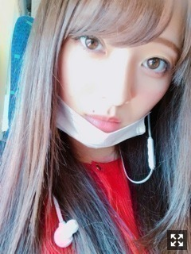
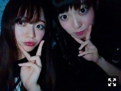

知らない街の探検
みなさまこんにちは！！
乃木坂46 ３期生の
梅澤美波です！！
おきてます〜（笑）
久しぶりになってしまいました、、
すみません(；；)
この間いちごを食べようと思って
冷蔵庫からいちごと練乳をとり
リビングにきたら
なぜか練乳が見当たらない、、
自分の周りを探し回っても見当たらない、、
確かに持ってきたはずなのに〜と思って
ふと、いちごの隣を見たら
そこにはマヨネーズがありました☺︎
練乳と間違えて
いちごとマヨネーズを持ってきていました
（笑）
こういう日もあるよね（笑）
４／２２、
お越しくださった皆様
ありがとうございました！
リハーサルしてるときから
前日までずっと実感が湧かなくて
生駒さんがいない乃木坂が
どうしても想像できなくて
ずっとそわそわしてたんです。
リハーサルの時に見た
生駒さんのソロのダンスに泣きそうになったり
力強さに圧倒されました
当日になって
武道館のステージに立ってリハーサルして
ああ、生駒さん卒業されるんだ
本当にいなくなっちゃうんだ
って、すっごい寂しくなった
どんどん色んな感情が湧き上がってきました
生駒さんが３期生と披露したい！
って言ってくださった
AKB48さんの初日も、
こんなに近くで踊れるのも最初で最後なんだな、って
踊ってる時は楽しさと寂しさで
心がぐるぐるしてました。
生駒さんがセンターに立つ乃木坂を好きになって
毎日の生活に楽しみをくれたのが乃木坂で
卒業を送り出す立場になっていて。
今出来ることは
生駒さんが安心してグループを卒業できるように力をつけることだなって思いました。
私が生駒さんと同じグループとして活動出来たのは
１年と８ヶ月。
長いようで短い時間だったけど
生駒さんから学ぶことは沢山ありました。
普段の活動から見せてくれる
言葉にしなくても分かる
こうあるべきだという姿勢とか
どの現場に言っても色んな方から
笑顔で囲まれる生駒さんの姿、
生駒さんの全てを見て
どれだけのことをしてきて
どれだけの影響を乃木坂に残してきた人なのか
近くにいればすぐ分かりました
華奢で小柄な身体なのに
その身体から放たれるパワーは
本当にすごかった。
わたしもこんな人になりたいって、
そう思わせてくれました
一緒に過ごしたこの時間を忘れずに
生駒さんが愛した乃木坂の力に少しでもなれたらいいなって思います。
５／６の全国握手会まであと少しですが
最後まで生駒さんの姿を目に焼き付けたいと思います！

赤い服買ったのー！
握手会楽しみにしててね〜
そして先日、
舞台「七つの大罪The STAGE」
キャスト先行の当落が発表されました！
申し込んでくださった皆様、
ありがとうございました！
結果はどうだったかなあ( .. )
楽しみに待っていてください☺︎
そしてボンボンTVさんの
YouTubeチャンネルに、
メリオダス役の納谷健さん、
バン役の有澤樟太郎さん、
そして私が出演させていただいています！
"【あるある】こんなドラマは嫌だ！やってみた！"
の動画の後半です！
ぜひチェックしてみてください！
新幹線から撮った写真！
めっちゃ綺麗だ〜見とれます
４／２５は「シンクロニシティ」発売日です！！ぱちぱち
早いですね〜∠( ˙-˙ )／
私の参加楽曲は
３期生曲「トキトキメキメキ」
アンダー曲「新しい世界」
の２曲です！
そして３期生の１２人は
個人PVも収録されています！
私の監督さんは番場秀一さん！
乃木坂の楽曲だと
私が大好きでやまない「急斜面」、
BUMP OF CHICKENさんや
ゆずさん、スピッツさんや
昔から大好きな曲、
椎名林檎さんの「ギブス」など
たくさんのMVを手掛けている方です！
一緒にお仕事できて
とても光栄です、、(；；)
撮影がものすごく楽しくて
優しいスタッフの皆様に囲まれ
笑顔いっぱいの撮影現場でした！
とてもシュールで面白くなっているかと思います！
こちらもぜひチェックしてください！
そしてもうひとつ！
セブンイレブンさんと乃木恋の
コラボキャンペーンで
「乃木恋カフェ〜セブンストーリーズ〜」
が５月１日から配信されます！
私は大好きな若月さんと、
EPISODE2 「好きになったら」
に参加しています！
若月さんとの撮影
ほんっとに楽しかったなあ〜( .. )♡♡
おたのしみに〜
お知らせばかりになってごめんね( .. )
舞台「星の王女さま」の
愛知公演が始まりました！
東京から少し空いたから
お久しぶりって感じがします！
この４公演終えたら
もうこの作品とはお別れなのかあと思うと
すごく寂しいですが
後悔しないようにやり切ってきます！
来られる方はお楽しみに！

これは本当に今の写真！
もうすぐ握手会だね〜
めちゃくちゃ久しぶりだ！！
３／３１の大阪全握以来だから
１ヶ月空いたね〜( .. )
舞台の感想とか
シングルのMVの感想とか
まだ何も聞けてないから楽しみだな〜
皆様の近況だったりも
ぜひ教えてねっ！
話題ないよって人は
なんでも振ってくれたら全力で返すね！（笑）
４／２９が大阪全握！
２０枚目最初の握手会！
ぜひ遊びに来てねっ
ペアは同い年のまあやさん！
嬉しい〜楽しみだなあ〜
ぜひ遊びに来てねっ
まあやさんのファンの皆様、
どうぞよろしくお願いします( .. )
そして４／３０が大阪個握です！
２日連続来てくれる方もいるのかな？
楽しみにしてます∠( ˙-˙ )／
私服お楽しみにね
それではまたねっ
おやすみ〜
ゆっくり眠ってね〜
新しいことへの挑戦はとても難しいけど発見があります
悩んでいることも時間が解決してくれることもあるはず
だから今は前を見て頑張ります
Original：https://www.nogizaka46.com/s/n46/diary/detail/44650?ima=4954&cd=MEMBER